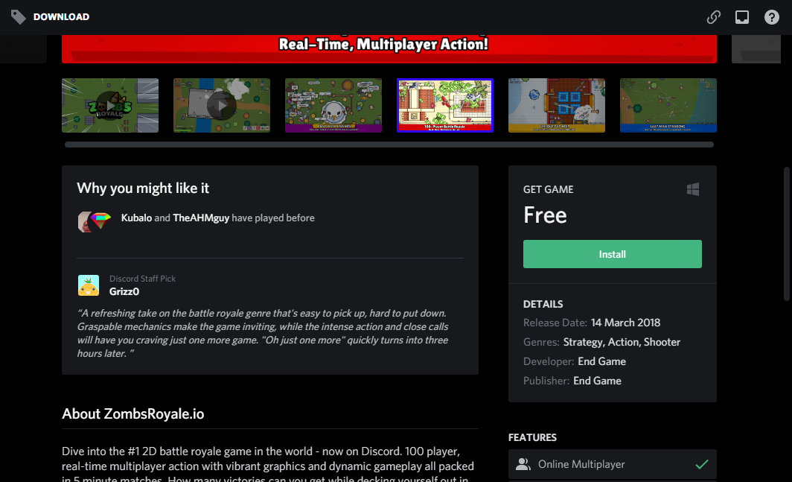

Build Numbers, Initials and Status for each Themes (beta)
+---------------------------------------------------------------------------+
| THEME NAME | INITIALS | B.NUMBER | STATUS |
+------------------------------+-------------+----------+-------------------+
| AlwaysDisplayChannelButtons | ADCB | 5 | UPDATED |
| AmoledDarkTheme | DA,ADT | 278 | UPDATED |
| AmoledDarkThemeOptimized | DAO,ADTO | 178 | UPDATED |
| BasicBackgroundEnhancer | BBE | 9 | DEAD |
| BetterDiscordLightThemeFixer | BDLTF | 4 | UPDATED |
| BlurEmail | BE | 3 | UPDATED |
| CompactChannels | CC | 9 | UPDATED |
| ContextMenusOldStyle | CMOS,COS | 5 | UPDATED |
| CustomFontForBrowser | CF,CFFB | 36 | UPDATED |
| CustomFontForDiscord | CF,CFFD | 6 | UPDATED |
| GreenSpotifyControls | GSC | 6 | UPDATED |
| OperaGxGamingTheme | OGGT | 0 | NEEDS UPDATE |
| RemoveNitroTab | RMNT,RNT | 2 | UPDATED |
| ServerlistAtBottom | SLAB,SAB | 7 | UPDATED |
| TextAreaMaxHeightModifier | TAMHM,TMHM | 2 | UPDATED |
| TypingAtTopOfChatBox | TATOCB | 5 | UPDATED |
| UT00_AllUtilities | UT00AU | 5 | NEEDS UPDATE |
| YouTubeBlurEmails | YTBE | 3 | UPDATED |
+---------------------------------------------------------------------------+
Changelogs
Initials are used. For example ADT means AmoledDarkTheme. See the list of initials just above. Another example, ADT:123 means AmoledDarkTheme build 123. Note that the theme version is not the same as the imported build version.
2020-08-25
- ADT:278 - Stopped kidding, seriously…
- ADTO:178 - Stopped kidding, seriously…
2020-08-20
- GSC:6 - Another compatibility update.
- CFFB:36 - This file was edited, but changelog is not provided.
2020-08-19
- ADT:277 - Improved DevTags, now it's like BotTags in case you are using EditUsers.
- ADTO:177 - Improved DevTags, now it's like BotTags in case you are using EditUsers.
2020-08-18
- CFFB:35 - Add 2 new selectors.
- Website - Added OGGT from the themes page. Updated images.
2020-08-17
- BBE:9 - This theme is now dead and replaced by OperaGxGamingTheme.
- GSC:5 - Now it also supports the mode without the time bar!
- ADT:276 - Fixed compact memberlist and added the
--background-secondary-alt var.
- ADTO:176 - Fixed compact memberlist and added the
--background-secondary-alt var.
2020-08-15
- CC:9 - Memberlist is ready! Also improved transitions:
width only.
2020-08-13
- TATOCB:5 - Fix Jump To Present bar clicking issue.
2020-08-11
- TATOCB:4 - Now supports the Jump To Present bar.
2020-08-10
- CMOS:5 - Compatibility update: Removed shit normalized classes in all selectors.
- CC:8 - Compatibility update: Removed shit normalized classes in all selectors.
- GSC:4 - Compatibility update: Removed shit normalized classes in all selectors.
2020-08-09
- CFFD:6 - Compatibility update.
2020-08-08
- All Themes - Add Website link (redownloading is not required).
- GSC:3 - Compatibility update.
- SAB:7 - No longer interacts with memberlist (by changing a bad selector).
- TATOCB:3 - Removed shit transparent background for BetterFormattingRedux.
2020-08-04
- ADT:275 - Hover on someone in the chat who haves a tag for more info.
- ADTO:175 - Hover on someone in the chat who haves a tag for more info.
- BBE:8 - Hover on someone in the chat who haves a tag for more info.
2020-08-01
2020-07-30
- Website - Fixed download button for AmoledDarkThemeOptimized.
- ADT:274 - Fixed server folders (light theme), and supports the new BetterDiscord v1.0.0.
- ADTO:174 - Fixed server folders (light theme), and supports the new BetterDiscord v1.0.0.
- BDLTF:4 - Supports BetterDiscord v1.0.0, public servers and Custom CSS (you must install the new BDLTF and delete the old file).
2020-07-29
2020-07-27
- RNT:2 - Not an update, but I verified it and good news, it works.
- Modernizer:22 - Killed Modernizer, now this theme is dead.
- BBE:7 - Added all Modernizer code in BBE.
2020-07-26
- Website - Added shadows and the changelogs button in themes page. Images and somme buttons was modified.
2020-07-25
- Website - Added the themes page. Tried to fix sizes but it partially worked.
2020-07-23
- ADT:273 - Store download page now modified by the theme.
Improved the system for build numbers for ADT and ADTO, so I'll a bit faster for future updates.
- ADTO:173 - Store download page now modified by the theme.
Improved the system for build numbers for ADT and ADTO, so I'll a bit faster for future updates.

2020-07-22
- Repository - Edited some MD files.
- Website - Non-generated website released!
- ADT:272 - Fix light theme DMs
- ADTO:172 - Fix light theme DMs
2020-07-21
2020-07-18
- CFFB:33 - Add
.highlight pre
- ADT:269 - Selected private channel background uses accentcolor
- ADTO:170 - Selected private channel background uses accentcolor
- M:21 - Disabled some code (border for mentions, padding for messages)
2020-07-17
- CFFB:31 - Fix link not working
- CFFB:32 - Trying to fix codezones on GitHub
2020-07-16
- M:20 - Add radius for "channel private search"
- SAB:6 - Supports private channels
2020-07-15
- Repository - Created this repository and updating it to get ready
- ADT:268 - Edited DevTags and added HelperTag
- ADTO:169 - Edited DevTags and added HelperTag
Join Discord